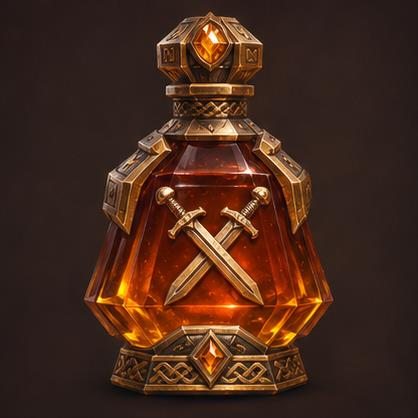
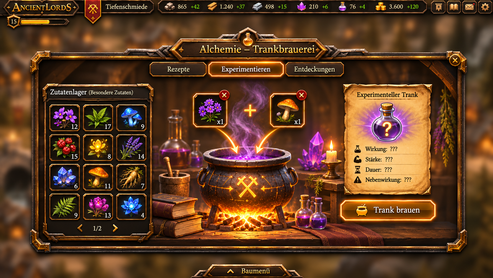
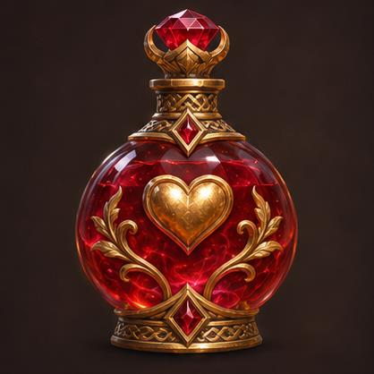
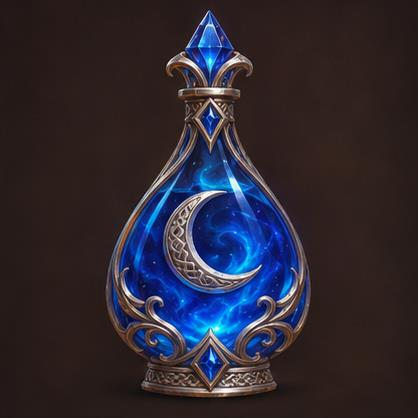
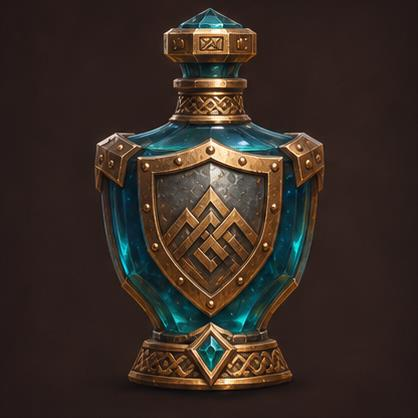
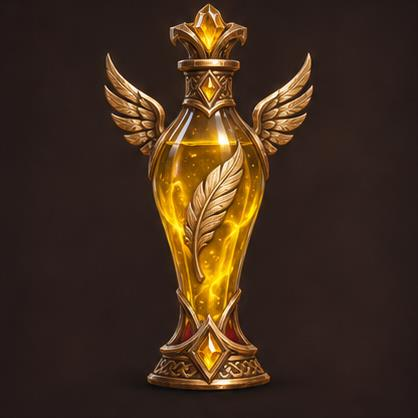
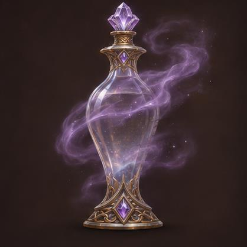
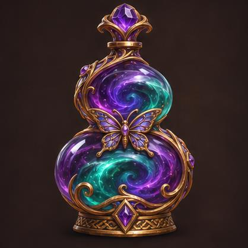
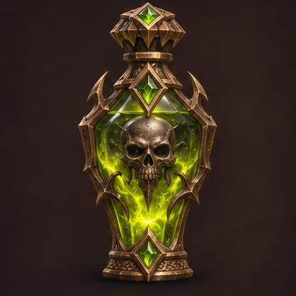
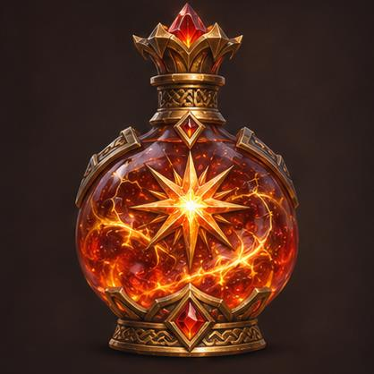

Stärkungstrank
Erhöht den Angriffsschaden der Einheit.
Auf ihren Streifzügen über die Karte finden die Untertanen seltene Kräuter, Pilze, Hölzer und weitere Bestandteile. Sie bringen ihre Funde zum Alchemisten zurück, der daraus Tränke braut.

Im Brettspiel Die Alchemisten hat jede Zutat verborgene Eigenschaften. Wer zwei verschiedene Zutaten mischt, erfährt durch das Ergebnis etwas über beide. Bestimmte Eigenschaften scheiden aus, andere bleiben möglich. Ein weiterer Versuch mit einer anderen Kombination kann zwischen den verbleibenden Möglichkeiten unterscheiden. Innerhalb einer Partie gilt dieselbe Zuordnung. Zu Beginn der nächsten Partie wird sie neu ausgelost. Zur offiziellen Spielregel
Angenommen, die Untertanen bringen in dieser Runde ein Kraut und einen Pilz zurück. Der Alchemist kombiniert die beiden zufällig verfügbaren Zutaten. Welche Wirkung die Mischung hat, kann sich in jeder Spielrunde ändern. Eine Mischung, die in der vorigen Runde heilte, kann diesmal also eine ganz andere Wirkung haben.
Der Alte Gott kann den Trank an einem seiner Untertanen oder an einem Gefangenen erproben lassen. Dabei können negative Wirkungen und Nebenwirkungen auftreten, die Werte oder Resistenzen der Figur verändern. Solche Versuche können auch die Moral der Untertanen senken.

Erhöht den Angriffsschaden der Einheit.

Füllt die Lebenspunkte der Einheit auf.

Füllt das Mana der Einheit auf.

Erhöht die Verteidigung der Einheit.

Erhöht die Bewegungsgeschwindigkeit der Einheit.

Dieser seltene Trank macht die Einheit unsichtbar.

Dieser seltene Trank verwandelt die Einheit.

Verursacht über Zeit kontinuierlich Schaden.

Löst im Zielgebiet eine Explosion aus.